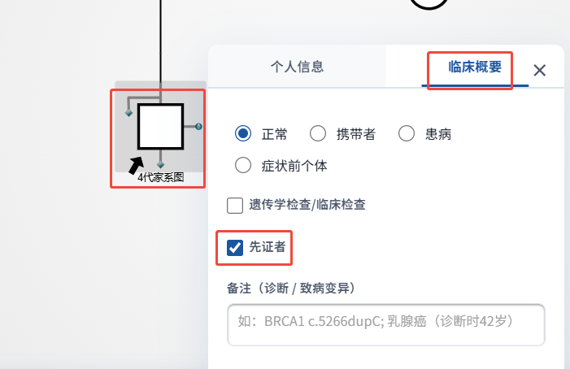
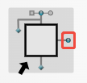
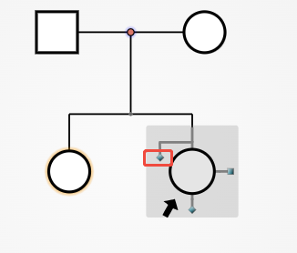
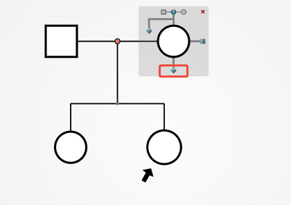
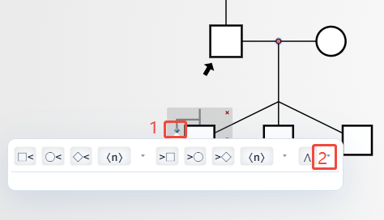
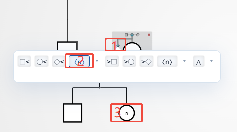
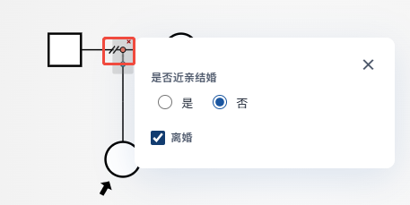
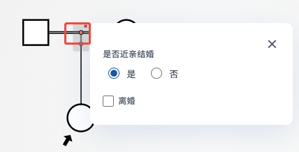

遗传家系图绘制教程
遵循 ACMG / ESHG 国际标准，从基础操作到临床标注，循序渐进掌握 PedigreeDraw 的全部核心功能。
选择模板开始绘制
进入编辑器后，系统会自动弹出模板选择窗口。你可以选择预设模板快速开始，也可以选择「空白画布」从零绘制。
在弹出的模板选择器中，浏览可用的家系图模板。模板预设了常见结构（如核心家庭、三代家系等），选中后点击即可加载。
选择「空白画布」，系统会自动创建一个先证者节点（带箭头 ↗ 标记），你可以在此基础上自由添加成员。
修改先证者信息
先证者（Proband）是家系图的核心成员，通常是首先就诊的患者。空白画布创建时会自动生成一个先证者节点。
先证者节点左下角有箭头（↗）标记，这是 ACMG/ESHG 标准的官方标注方式。
点击先证者节点，打开「个人信息」面板，切换到「临床概要」信息栏。
在临床概要中勾选「先证者」选项（默认已勾选）。

创建夫妻关系
在 PedigreeDraw 中，通过节点周围的蓝色小圆球（orb）来创建夫妻关系。
将鼠标悬停在任意个人节点上，节点周围会出现蓝色虚线框和几个小圆球，每个圆球代表一种操作方向。
点击右边小圆球 → 快速创建新配偶节点
创建成功后，两个节点之间会出现水平连接线（婚配线），表示夫妻关系。

新增兄弟姐妹节点
要给某个成员添加兄弟姐妹，点击节点弹出操作面板选择。
将鼠标悬停在需要添加兄弟姐妹的个人节点上，然后点击节点。
点击左侧小圆球后会弹出操作面板，左侧按钮在节点左侧添加哥哥/姐姐，右侧按钮在节点右侧添加弟弟/妹妹。
每个方向有三种性别选项：方形（男）、圆形（女）、菱形（未知性别）。

新增子女节点
节点下方会出现蓝色圆球。点击创建新子女节点。

创建双胞胎与多胞胎
双胞胎和多胞胎的创建方式与普通子女类似，通过展开选项调整数量。
在子代创建面板中找到 ⋀ 按钮（创建双胞胎），点击后默认创建 2 个双胞胎节点。
点击双胞胎按钮旁的箭头，可以调整双胞胎/多胞胎数量（2 = 双胞胎，3 = 三胞胎，以此类推）。
〈n〉 按钮用于创建代表多个兄弟的节点（如「3个正常兄弟」）。


删除节点
删除节点操作简单直观，误删可撤销恢复。
将鼠标悬停在要删除的节点上，节点右上角会出现红色 ✕ 删除按钮。
点击红色 ✕ 按钮即可删除该节点，所有相关连接线也会自动移除。
按 Ctrl+Z 可撤销操作，恢复被删除的节点及其所有连接。
标记未生育 / 不育
明确标注未生育或不育状态，帮助区分「没有子女」是因为选择还是生理原因。
悬停并点击目标节点，弹出操作面板。
┴ 未生育 — 表示自愿选择不生育或目前无子女╧ 不育 — 表示因生理原因无法生育（多一条横线）
离婚与再婚
离婚在遗传家系图中用婚配线上的斜线（/）表示。
鼠标悬停在夫妻节点连线上，点击红色圆点，打开「个人信息」面板。
在「状态」字段中选择「离婚」，保存后婚配线上会出现斜线标记。
离婚后，拖拽该节点左侧或右侧的圆球可与新配偶建立夫妻关系。

近亲结婚
近亲婚配在 ACMG 标准中用婚配线上的双横线（=）表示，在常染色体隐性遗传病分析中尤为重要。
鼠标悬停在夫妻节点连线上，点击红色圆点，打开「个人信息」面板。
勾选「近亲婚配」选项，婚配线会从单线变为双横线。

拖拽连接与合并
拖拽圆球到现有节点可以实现更灵活的节点连接。
鼠标悬停节点后，按住蓝色小圆球不放，拖动到目标节点方向。
可以连接的有效目标节点会以绿色高亮显示。
在绿色高亮的目标上释放鼠标即可建立关系。
画布操作与快捷键
熟练使用快捷键可以大幅提高绘制效率。
| 操作 | 快捷键 | 说明 |
|---|---|---|
| 撤销 | Ctrl + Z |
撤销上一步操作 |
| 重做 | Ctrl + Y |
恢复被撤销的操作 |
| 保存 | Ctrl + S |
自动保存到本地 |
| 缩放画布 | 鼠标滚轮 |
以鼠标位置为中心缩放 |
| 平移画布 | 空格 + 拖拽 |
按住空格键拖拽移动画布 |
| 删除节点 | 点击 ✕ |
先证者不可删除 |
Ctrl+S 保存一次。
📐 ACMG/ESHG 标准符号速查
明确绘图目的与代数范围
在开始绘图前，根据临床或科研需求确定：需要收集几代家系信息（建议至少三代）、是否需要旁系亲属、先证者是否明确。
☑ 父母患病/携带情况
☑ 兄弟姐妹表现型
☑ 祖父母/外祖父母信息
从先证者所在代开始录入
优先录入先证者（Proband），填写：姓名或编号、性别、出生年份、诊断/表现型、基因检测结果。先证者需勾选「先证者」标记。
逐代向上添加并标注表型
依次标注每位成员的患病状态：空白（未患病）、实心（患病）、半实心（携带者）、斜线（已故）。
标注遗传方式并整理布局
在「家系信息」面板填写推断的遗传方式（AD/AR/XD/XR/MT）及相关基因名称。点击「自动布局」按钮按代数分层排列。
常染色体显性遗传（AD）
每代均有患者，患者父母之一通常患病。注意标注每代患病成员，可标注不完全外显率（如「外显率 80%」）。
常染色体隐性遗传（AR）
患者通常只出现在同胞中，父母表现正常但为携带者（半实心符号）。需特别标注近亲婚配（双横线）。
X 连锁遗传（XD/XR）
XR：男性患者多于女性，患者母亲通常为携带者。XD：女性患者多于男性，注意标注携带者女性（圆心点）。
线粒体遗传
所有子女（无论男女）均可遗传自患病母亲，但父亲不传递。绘制时在母系成员旁标注「MT」。
先证者与标注规范
先证者箭头标于图左下，编号规则：罗马数字（代）+ 阿拉伯数字（个体），如 III-2。图例须置于系谱图右下角。
撤销与版本管理
使用 Ctrl+Z 撤销、Ctrl+Y 重做，支持多步回退。建议完成每一代录入后手动保存（Ctrl+S），重要版本可导出 JSON 存档。
⚠️ 近亲婚配的绘制规范
近亲婚配（consanguineous union）用双横线连接两个配偶节点，而非单横线。这在常染色体隐性遗传病系谱中尤为重要。
📄 SCI 投稿图像规范参考
① 图像宽度：单栏 ≈ 8.5 cm，双栏 ≈ 17.5 cm
② 线条粗细：建议 1–1.5 pt
③ 字体大小：图内标注文字 ≥ 6 pt
④ 颜色：优先使用黑白，必要时用色盲友好配色
⑤ 图例：必须包含所有特殊符号说明